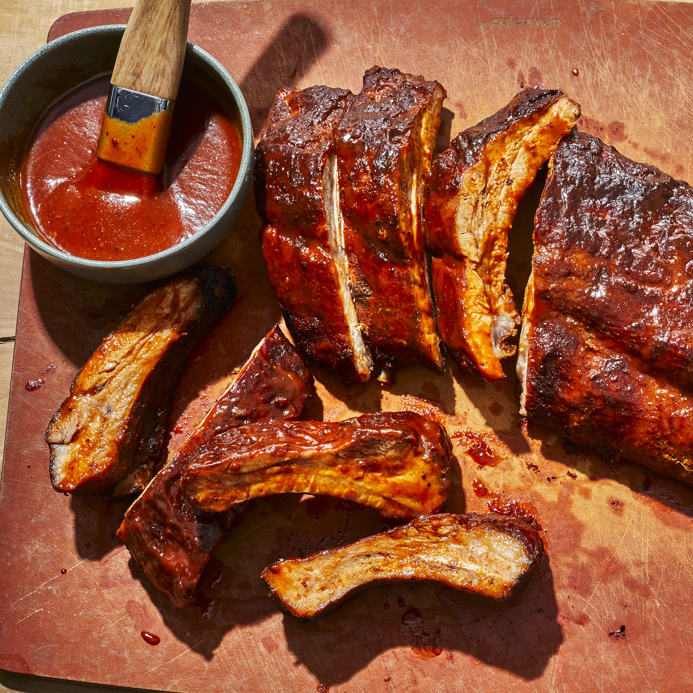

Barbecue Ribs

Description
This oven-baked baby back ribs is incredibly easy to make but delicious and full of flavor.
It is seasoned with a dry rub, glazed with barbeque sauce and baked until fall-off-the-bone tender.
Try it out with any combination of your favorite dry rub and barbecue sauce!
Ingredients
- 1 rack of baby back ribs
- 1 tsp salt
- 1/2 tsp pepper
- 2 tsp garlic powder
- 2 tsp paprika
- 1 tsp cumin
- 2 cups barbecue sauce
Steps
- Preheat oven to 250 degrees F
- Mix salt, pepper, garlic powder, paprika, and cumin in a bowl
- Prick the back of the rack of ribs with a fork or knife a few times
- Rub spice mix on all sides of the rack of ribs
- Place rack, meat side down, on aluminum foil and fold the foil over the ribs to create a tight seal
- Place on pan and bake for 2 hours
- Remove from oven and let the ribs rest for 15 minutes
- Meanwhile, increase oven temperature to 350 degrees F
- Open foil, drain any juices, and brush barbecue sauce on all sides of the ribs
- Turn rack so it is meat side up. Leave the foil open and bake for 10 minutes
- Remove from oven, brush another layer of barbecue sauce on only the meat, and bake for another 10 minutes
- Repeat previous step (brushing with barbecue sauce and baking 10 minutes) 3-4 more times
- Slice and serve!